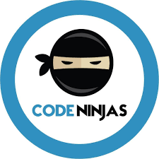

School Clubs
I am proud to serve as an officer in my school's National Honors Society (NHS). In this role, I manage volunteer events, support NHS members, and, most importantly, contribute to building a better community.

EDS is a club dedicated to addressing a significant issue affecting teenagers today: addiction. As the Director of Technology at EDS, I oversee and lead the development of our website and app. We are currently in the research phase of our project, working diligently to create effective solutions.
Being an active member of live theater since 6th grade has significantly contributed to my personal growth. In high school, I have explored Greek theater, children's theater, and filmmaking. I've participated in productions such as Shakespeare in Love, Women of Lockerbie, Notebook of Trigorin, How to Succeed in Business Without Really Trying, Twisted Tales of Terror, and an original film titled "Misunderstanding."
Volunteering
Volunteering at the Frisco Public Library through the VolunTEEN program was a rewarding experience. As a volunteer, I organized returned books, reshelved them, assisted library patrons, and managed the Mayor's Summer Reading Challenge.
By volunteering at the Frisco Science Discovery Center, I had the opportunity to help teach kids about various fields of science and STEM, fostering their curiosity and encouraging them to explore new concepts.
As a volunteer teacher (sensei) at Code Ninjas, I taught kids ages 7-14 about Roblox world development, 3D printing, and introduced them to AI using Micro Bit and Scratch.
Computer Science
I am thrilled to have been part of the inaugural STEAM Olympic Hackathon development team! Collaborating with a talented group, I brainstormed innovative coding challenges, developed solution code, and served as a judge during the competition. This experience not only tested my technical skills but also contributed to my personal and professional growth. I'm grateful for the opportunity to learn, collaborate, and make lasting connections, and I look forward to applying these insights in future endeavors.
 Check out my Projects
Check out my Projects